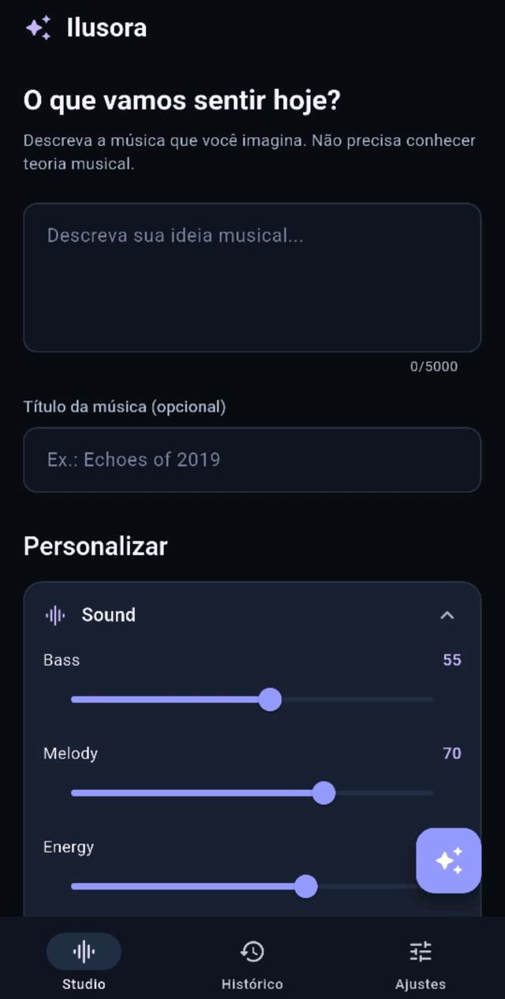
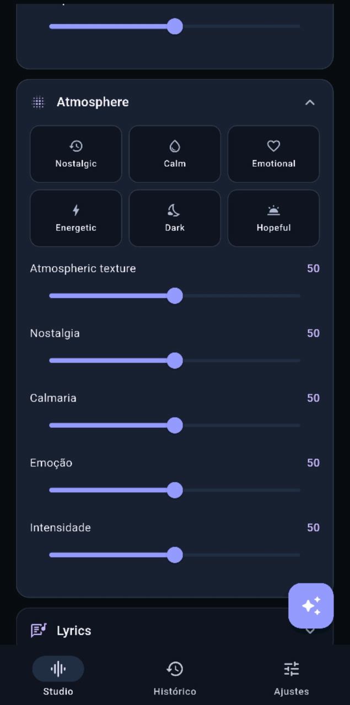
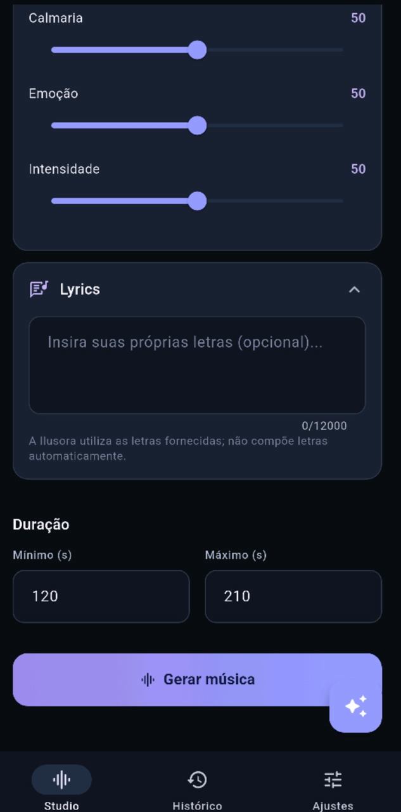

Meu nome é Elder. Sou desenvolvedor autodidata de São Luís (MA), com aproximadamente um ano e meio de experiência prática em projetos próprios. Meu foco é engenharia de software AI-native: defino arquitetura, regras de negócio e decisões técnicas, coordeno implementações com agentes de IA e avalio resultados. Atuo em backend, frontend e deploy, construindo aplicações de ponta a ponta.
Em 30 segundos: o que eu entregoBackend + Flutter + IA
Produtos que desenvolvi para resolver necessidades reais, da criação musical ao entretenimento, à organização de projetos e às comunidades digitais.
PROJETO / 001Criação pessoal
Ilusora ♫

Criação musical

Controles de atmosfera

Configurações de geração
Aplicativo de criação musical com IA. Desenvolvi fluxos de geração, autenticação, gerenciamento de músicas e versões, com Flutter, Node.js/Express, MongoDB e R2. O módulo MusicSpec possui 10 casos de teste automatizados de validação.
Node.jsMongoDBFlutterCloudflare R2OpenRouterLyria 3 Pro
Plataforma web e aplicativo Android com IA integrada. Desenvolvi funcionalidades full-stack, API Node.js/Express, autenticação, painel administrativo e persistência MongoDB. No Flutter, utilizei Hive, cache e sincronização de dados local/remota em segundo plano.
Workspace de IA para desenvolvimento de jogos. Project Brain, entidades e relacionamentos, chat com ações, roteamento de modelos, planos e créditos. Backend em camadas com JWT, permissões, rate limiting e testes unitários, de integração, API e E2E. Deploy com CI/CD, VPS Linux, Nginx, PM2 e Vercel; utilizado por testadores externos. Desenvolvido em parceria com Lucas: minha atuação concentrou-se no backend e a dele no frontend.
Rede social para mulheres em desenvolvimento, com conceito complementado por uma amiga. O desenvolvimento técnico é de minha responsabilidade. Backend Node.js/Express e MongoDB com serviços de publicações, interações sociais e moderação. Testes automatizados com simulação de banco e dependências externas. O aplicativo Flutter ainda está em fase inicial.
YuukoMangas — backend, aplicativo e painel administrativo
Uma plataforma de leitura e descoberta de obras com aplicativo Android, interfaces web e API própria. O desafio técnico é manter dados de usuários, catálogo e operações administrativas consistentes entre clientes diferentes, sem transformar o aplicativo em uma simples interface dependente da conexão.
Aplicativo Flutter ↔ API Node.js / Express ↔ MongoDB ↕ Hive local: favoritos, histórico e dados da conta Painel React / Vite → API: administração e moderação de obras
Backend e controle de acesso
API Express com persistência MongoDB, rotas de autenticação e rotas específicas para operações oficiais.
Middleware de limitação de requisições, configuração para uso atrás de proxy e registro de requisições.
Endpoints administrativos para listar obras com paginação, aprovar publicações e rejeitá-las com motivo.
Separação entre o fluxo de consumo do aplicativo e as ações de administração do catálogo.
Sincronização no aplicativo
Persistência local com Hive, mantendo dados de usuário, favoritos e histórico de capítulos.
Operações de envio (push) e busca (pull) para sincronizar dados entre dispositivo e backend.
Filas de adição e remoção de favoritos e envio de alterações de histórico.
Tentativa de renovação de access token antes de operações autenticadas e tratamento de falhas de sincronização.
Painel administrativo React
Listagem paginada de obras com estados de carregamento e erro.
Fluxos de aprovação e rejeição, com atualização do estado exibido após a operação.
Filtros de título, idioma e status na página carregada.
Cliente Axios com interceptores para autenticação Bearer, renovação de token e repetição de requisições após erro 401.
Decisões que demonstram engenharia
Dados locais e remotos exigem fluxos explícitos de sincronização, não apenas chamadas HTTP isoladas.
O painel centraliza operações privilegiadas que não pertencem à experiência comum de leitura.
A renovação de tokens é tratada nos clientes para reduzir interrupções por expiração de sessão.
Paginação evita depender de carregar todo o catálogo administrativo de uma vez.
Arquitetura resumida a partir de arquivos inspecionados nos repositórios privados do backend, aplicativo e painel. A presença de mecanismos de sincronização e autenticação não equivale a afirmar funcionamento offline irrestrito, ausência de conflitos ou segurança auditada. Nenhum código privado é exposto aqui.
Yuno — contexto estruturado para desenvolvimento de jogos
Projeto colaborativo: desenvolvi o backend e suas regras de negócio; Lucas foi responsável pelo frontend. A integração entre interface e serviços fez parte do trabalho em equipe.
Em vez de depender exclusivamente do histórico de uma conversa, o Yuno organiza informações de projetos de jogos em entidades e relacionamentos. A proposta é permitir que a IA consulte o contexto do projeto e trabalhe com ações estruturadas, mantendo uma base de conhecimento mais organizada.
Interface de projeto → Project Brain (entidades + relações) → resolução de contexto → roteamento de modelos → resposta / ações estruturadas
Problemas de engenharia
Modelagem de informações e relações de um projeto criativo.
Separação entre conversa, contexto persistido e ações sobre o projeto.
Integração com provedores de modelos de IA por uma camada de roteamento.
Controle de acesso, créditos, limites de requisição e testes em diferentes níveis.
Operação e entrega
Aplicação web e serviços backend implantados separadamente.
VPS Linux com Nginx e PM2; frontend publicado na Vercel.
Fluxo de integração e entrega contínuas com GitHub Actions.
Produto acessível para testes externos; não são divulgadas métricas sem comprovação.
Fluxo conceitual baseado na descrição do projeto; o repositório privado não foi auditado nesta revisão.
Aplicativo mobile-first para transformar descrições e controles musicais em versões de áudio. A arquitetura separa o aplicativo Flutter, a API Node.js/Express, a interpretação por LLM, a geração de áudio por provedor externo, os metadados no MongoDB e o armazenamento de arquivos no Cloudflare R2.
Flutter → API Express → validação MusicSpec → LLM / provedor de áudio MongoDB: músicas, versões e estados · R2: arquivos de áudio
Modelagem e execução
MusicSpec descreve controles, estrutura, voz, duração e restrições de forma validável.
Uma geração é uma operação distinta da música e do arquivo; pode falhar sem produzir uma versão.
O contrato de estados prevê PENDING, SUBMITTING, PROCESSING, RETRIEVING_AUDIO, STORING_AUDIO, COMPLETED e FAILED.
Configurações confirmadas devem permanecer imutáveis; cada nova geração produz uma versão separada.
Confiabilidade e segurança
Idempotência projetada para impedir operações duplicadas pela mesma chave.
Timeout remoto não equivale automaticamente a falha: o modelo prevê reconciliação quando o resultado é incerto.
Segredos dos provedores ficam no backend; áudios ficam fora do banco, no R2.
Dez testes automatizados verificam validação de controles, duração, modos vocais, estrutura e erros.
A máquina de estados, a reconciliação e a idempotência são descritas como contratos e decisões de arquitetura; a implementação integral de cada fluxo não foi auditada. Os dez testes de MusicSpec foram inspecionados no código, sem execução nesta revisão.
ESTUDO DE CASO / 04 · BACKEND SOCIAL
DIVAS — feed, segurança, monetização e IA social
O conceito foi desenvolvido por mim com contribuições de ideias de uma amiga, sem divisão formal de responsabilidades de desenvolvimento. A implementação técnica é minha.
Rede social para mulheres com backend modular em Node.js/Express e MongoDB. A API versionada organiza autenticação, perfis, publicações, interações, mensagens, notificações, busca, impulsionamentos, pagamentos, moderação, administração, analytics e a assistente Yuuko. O cliente Flutter segue em desenvolvimento.
Flutter (em desenvolvimento) → API /api/v1 → controladores → serviços → repositórios MongoDB Serviços externos: Stripe / Pix · OpenAI Moderation · provedores de IA
Feed com personalização controlada
O feed base aplica privacidade, bloqueios, moderação, diversidade, Boosts e paginação por cursor antes de qualquer personalização.
Uma camada de ranking usa curtidas, comentários, repostagens, visualizações qualificadas e categorias escolhidas pela integrante.
Pesos, limites e decaimento temporal tornam a pontuação auditável; impressões não são confundidas com consumo.
O sistema evita inferir automaticamente preferências em categorias sensíveis, mesmo quando há interação com esse conteúdo.
Segurança e moderação
Autenticação Google, sessões e middleware de autorização.
Classificação de conteúdo com OpenAI e política interna separada para permitir, revisar ou bloquear.
Motor de risco, denúncias, casos, recursos e ações administrativas; o modelo não tem permissão direta para banir contas.
Monetização e consistência
Premium pré-pago via Pix/Stripe, com concessão de benefícios após confirmação por webhook.
Registros e mecanismos de idempotência para evitar créditos duplicados em reenvios de eventos.
Boosts possuem controle de saldo, campanhas e integração com a distribuição de publicações.
IA integrada ao produto
Yuuko atua em respostas a menções e mensagens diretas com contexto e ferramentas internas autorizadas.
O backend controla permissões e persistência; o LLM não recebe acesso irrestrito aos dados.
O desenho prevê tarefas persistidas temporariamente e eventos de progresso via SSE para operações mais longas.
Publicações principais da conta oficial exigem ação administrativa, não são geradas autonomamente pela IA.
Descrição baseada na documentação e em módulos existentes da API. Recursos documentados como previstos não são apresentados como comprovadamente operacionais em produção; testes de carga e implantação completa do app não foram verificados.
02 / Desenvolvimento mobile
Flutter além das interfaces.
Desenvolvo aplicativos em Flutter/Dart com gerenciamento de estado, integração HTTP, persistência local e tratamento de fluxos assíncronos. Abaixo, exemplos identificados no código de três projetos, distinguindo recursos implementados daqueles ainda em desenvolvimento.
ANDROID · APLICATIVO DISTRIBUÍDO PELO SITE
YuukoMangas — estado, rede e sincronização
Aplicativo Android disponibilizado pelo site oficial. O código utiliza Riverpod para inicialização e gerenciamento de estado, Hive para dados locais e Dio para integração com múltiplos serviços.
Gerenciamento e persistência
Inicialização assíncrona com FutureProvider e carregamento do estado de autenticação.
Favoritos e histórico de leitura mantidos localmente e sincronizados com a API.
Dados persistidos com Hive para preservar informações entre sessões.
Rede e resiliência
Interceptors Dio para renovar token após respostas 401 e repetir a requisição.
Cache HTTP e retentativas configuradas para falhas de comunicação.
Integração de cliente mobile com APIs REST e serviços independentes.
Implementação de um PlayerController com ChangeNotifier e just_audio, acompanhando posição, duração, volume, reprodução, carregamento e buffering. O controlador consulta URLs de áudio, lida com conteúdo indisponível e trata falhas de requisição. O aplicativo está concluído; este destaque descreve a implementação do player.
ChangeNotifierjust_audioStreamsTratamento de erros
Aplicativo Flutter em desenvolvimento com ConsumerWidget, Riverpod e MaterialApp.router confirmados no código. A configuração inclui GoRouter, Dio, Freezed e armazenamento seguro; a implementação completa desses recursos e dos fluxos previstos ainda não foi validada nesta revisão.
Exemplos fundamentados em arquivos de implementação e configuração dos projetos. A presença de dependências não é tratada como prova de funcionalidades concluídas; não foram auditados testes de widgets ou publicação em lojas de aplicativos.
AI-Native / Agentic-First Software Engineering: meu processo prioriza o desenho de sistemas, a formulação de hipóteses e a direção técnica. Utilizo agentes de programação como Codex para implementar, investigar e propor alternativas; questiono suas escolhas, confronto hipóteses com evidências e valido entregas. IA é ferramenta de execução, não substituta da responsabilidade técnica.
03 / Método de desenvolvimento
Engenharia AI-native. Eu dirijo as decisões.
Uso IA como colaboradora técnica para explorar alternativas, inspecionar repositórios, implementar funcionalidades e revisar soluções. Minha atuação está em definir o problema, estabelecer requisitos, compreender o fluxo implementado e questionar o resultado antes de aceitá-lo. Não trato a primeira resposta de um modelo como verdade.
01 / DIREÇÃO
Requisitos e decisões
Defino objetivos, regras de negócio, restrições e prioridades. Discuto arquitetura e trade-offs com a IA, mas decido o que deve ser implementado.
02 / EXECUÇÃO
Implementação assistida
Delego análise de código, documentação, desenvolvimento e propostas de correção a ferramentas de IA, mantendo o contexto do projeto e suas convenções.
03 / REVISÃO
Entender antes de aprovar
Peço explicações do fluxo ponta a ponta, investigo possíveis brechas, questiono regras e solicito revisões e correções. Uso esse processo como apoio ao code review.
04 / ESCALA
Pensar além do MVP
Reavalio soluções considerando concorrência, volume de requisições, crescimento de usuários, limites de infraestrutura e pontos de falha. Quando necessário, proponho ajustes antes de escalar.
Critério de qualidade: uma implementação gerada por IA não está automaticamente correta. Revisão com o próprio modelo ajuda a identificar riscos, mas não substitui testes automatizados, validação independente, observabilidade ou testes de carga quando necessários. Meu objetivo é entender, questionar e melhorar o software — não apenas aceitar o código produzido.
04 / Experiência em equipe
Código também se constrói em conjunto.
Projetos com divisão de responsabilidades, integração entre componentes e colaboração com outros desenvolvedores. Minha contribuição está identificada separadamente da atuação de cada integrante.
COLABORAÇÃO / 01 · BACKEND + FRONTEND
Yuno — desenvolvimento em parceria
Workspace de IA para desenvolvimento de jogos, criado em colaboração com Lucas. Minha responsabilidade foi o backend, incluindo serviços, persistência e integrações; Lucas ficou responsável pelo frontend. O projeto exigiu alinhar os contratos e a integração entre as camadas.
Elder: backend, regras de negócio e APIs ↔ Lucas: frontend e experiência web
Projeto em equipe para coletar vagas de tecnologia de múltiplas fontes, evitar duplicações e distribuí-las automaticamente em comunidades de WhatsApp e Discord. A arquitetura documentada separa worker de scraping, persistência MongoDB, comunicação por webhook e bot de entrega.
Scraper → processamento e deduplicação → MongoDB / API Express → webhook → bot WhatsApp / Discord
Minha contribuição — YuukoDev
Modelagem do banco de dados MongoDB com Mongoose.
Desenvolvimento da API REST em Node.js e TypeScript.
Camada de dados que sustenta o processamento e a distribuição das vagas.
Contribuições da equipe
Tayron Silva: bot, integração com WhatsApp (Baileys), Discord e distribuição de mensagens.
danitsdev: scraping, coleta de vagas de múltiplas fontes e deduplicação.
Integração: worker isolado, webhook HTTP e configuração de implantação via Render.
Responsabilidades e arquitetura descritas na documentação fornecida pela equipe. O código do repositório não foi auditado nesta revisão; não são alegados resultados operacionais ou métricas não verificadas.
05 / Sobre mim
Inovar é bom. Depender menos é melhor.
Tenho 21 anos e moro em São Luís, Maranhão. Sou desenvolvedor Full-Stack Júnior, com foco em backend e aproximadamente um ano e meio de experiência prática em projetos próprios. Atuo com backend, frontend e deploy; documento decisões, estruturo fluxos e separo responsabilidades.
Comecei estudando lógica e sintaxe com exercícios, videoaulas e projetos open source do GitHub. Usei IA como apoio ao aprendizado e hoje a utilizo para acelerar o desenvolvimento, com revisão e testes. O uso contínuo do Termux e terminal me deu familiaridade com Linux e operação de serviços. Tenho ensino médio completo e planejo cursar Engenharia de Software EAD na Anhanguera. Meu inglês é intermediário (B1 estimado), com leitura técnica e comunicação em desenvolvimento.
BackendNode.js · Python
Banco de dadosMongoDB · Mongoose (principal)PostgreSQL · Prisma (em aprendizado)
Mobile / FlutterFlutter · Dart · Hive · APIs REST
WebReact · Vite
StorageCloudflare R2
IAOpenRouter · modelos
InfraestruturaLinux · Nginx · PM2 · Git
QualidadeTestes · documentação · CI/CD
// Daqui para baixo, o RH entra por sua conta e risco.
⚠ Você chegou à parte honesta demais.
Até aqui, um portfólio profissional. A partir de agora: zero treinamento corporativo de relações públicas.
06 / Política de contratação
Minhas habilidades têm valor. Meu tempo também.
Entregas rápidas, documentação, automação, fluxos auditáveis e sistemas estruturados. Estas são minhas condições — não um convite para negociar minha sanidade.
Limites não são desculpa para fugir de responsabilidade. Prefiro expectativas claras, prioridades combinadas e comunicação direta. Posso receber demandas e revisões dentro do escopo e do horário acordados; não vou fingir entusiasmo com urgências permanentes, disponibilidade irrestrita ou cobranças fora do combinado. Salário, carga horária e respeito às folgas e férias são o centro desta conversa.
R$ 2.500–5.000Pretensão salarial
Até 8 horasJornada negociável
NegociávelEscala e condições
Ar-condicionadoTrabalho no computador
Jornada de trabalho
Posso trabalhar até 8 horas por dia. A carga horária é totalmente negociável, contanto que o pagamento corresponda ao esforço que dedicarei à empresa. E esse esforço só acontecerá se houver respeito mútuo e tratamento decente.
Limites
Respeito mútuo, nesse contexto, significa compreender que também tenho uma vida fora do trabalho. Valorizo o cumprimento da jornada acordada e o respeito aos períodos de descanso, folgas e férias. Acredito que urgências e demandas devem ser administradas com planejamento, comunicação clara e respeito aos limites profissionais.
O que a empresa ganha com isso?
Se a empresa me tratar como ser humano, explicar tudo direitinho e compreender minhas necessidades e dificuldades, serei um funcionário dedicado, fiel e disposto a trabalhar no que for necessário, dentro dos limites combinados.
O mínimo que peço é respeito. O resto é negociável.
ADAPTABILIDADE E APRENDIZADO CONTÍNUO
Minha experiência atual é um ponto de partida, não um limite. Minha preferência atual é MongoDB, com o qual tenho mais experiência prática. Também estou ampliando meus conhecimentos em PostgreSQL e Prisma, e tenho disposição para aprender outras linguagens, frameworks, bancos de dados e ferramentas conforme as necessidades de cada projeto.
Valorizo a evolução técnica, a flexibilidade e a capacidade de encontrar a melhor solução para cada desafio.
07 / Encerramento
Me rejeite. Com gosto.
Se sua empresa respeita horários, folgas, férias e os acordos estabelecidos, podemos ter uma ótima parceria. Mas, se espera disponibilidade irrestrita, cobranças abusivas ou desrespeito aos limites profissionais, prefiro que me rejeite. Com gosto. Um “não” sincero é melhor do que uma relação de trabalho ruim para ambos.
Nenhuma entrevista desnecessária foi ferida na criação deste portfólio.
08 / Contato
Vamos trabalhar juntos?
Aberto a oportunidades como AI-Native Software Engineer ou Desenvolvedor Full-Stack Júnior, com foco em Backend e Flutter. Combino engenharia de software, decisões técnicas e desenvolvimento assistido por IA.